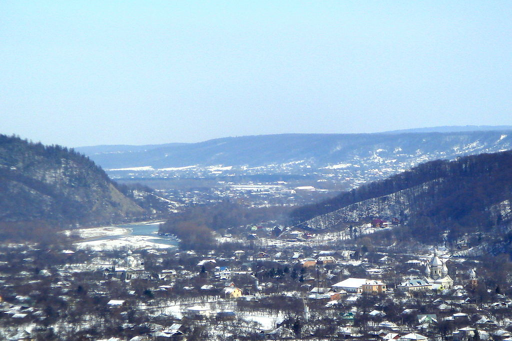

Вижниця
Вижниця — місто в Україні, у Чернівецькій області, адміністративний центр Вижницької міської громади та Вижницького району.
Географія
Місто розташоване на межі Чернівецької та Івано-Франківської областей, на річках Черемоші та Виженці, у межах Вижницької улоговини, за 70 км від обласного центру. З населенням 4 тис. осіб (на початок 2016 року), Вижниця, попри свій міський статус, менша за населенням ніж смт Берегомет, місто Вашківці та кілька сіл Вижницького району. Агломерація Вижниці зі довколишніми селами може досягати близько 25-30 тисяч.
Природа
Неподалік від міста розташований Вижницький національний природний парк (адміністративна будівля — у смт Берегомет).
Природоохоронні об'єкти
- Черемоський іхтіологічний заказник (частково);
- Два платани (пам'ятка природи);
- Коркове дерево (пам'ятка природи);
- Вижницька мінеральна (пам'ятка природи);
- Вижницький парк.
Історія
Коли виникла Вижниця, докладно невідомо. За однією з версій місто вперше згадується в літописах як
городок на
Черемоші під 1158 роком. За іншими даними, перша згадка про місто на кордоні Молдавського князівства
міститься у молдовському літописі за 1501 рік.
У 1514–1574 роках місто перебувало під владою турків, оскільки Молдавія потрапила у васальну залежність
від
них.
До 1774 року Вижниця входила до складу Молдовського князівства, після цього — Габсбурзької монархії (з
1804
року Австрійської імперії, з 1867 року — Австро-Угорщини).
Вижниця розвивалася як торгове поселення, тісно пов'язане з гірськими і низинними районами Буковини,
славилася хорошими ярмарковими традиціями. Статус ярмаркового місця поселення отримало 1767 року.
Наприкінці XVIII століття, з початком розвитку лісової промисловості, Вижниця стає важливим пунктом
торгівлі
деревиною. Після регулювання русла Черемошу (1790–1812 роки) будівельний ліс і дрова сплавлялися до
Чернівців, а звідти по ґрунтовій дорозі через Бояни — на Бессарабію і Поділля. Основна маса міщан
займалась
торгівлею і ремеслами.
Жорстока експлуатація, свавілля чиновників і дідичів викликали масові виступи і хвилювання серед
народних
мас. Населення гір піднялось на антифеодальну боротьбу. В 1817—1830 роках поблизу Вижниці діяв загін
опришків, очолюваний Мироном Штолюком. В 1848—1849 роках вижницькі селяни брали участь в антифеодальному
русі під керівництвом Лук'яна Кобилиці.
1855 року Вижниця стала повітовим центром.
Місто сильно постраждало в часи Першої світової війни. До складу міста включене село Рівня — тепер це
західна частина міста, відділена річкою Виженка.
Архітектура
- Дмитрівська церква (XIX ст.);
- Миколаївська церква (кін. XIX ст.);
- Петропавлівський костел (XIX ст.);
- Міська синагога (XIX ст.);
- Вокзал станції Вижниця (австрійських часів);
- Вижницька ратуша (будинок міської ради, початок ХХ ст.);
- Будинок Анни Москви-Голоти (Шухевича,13);